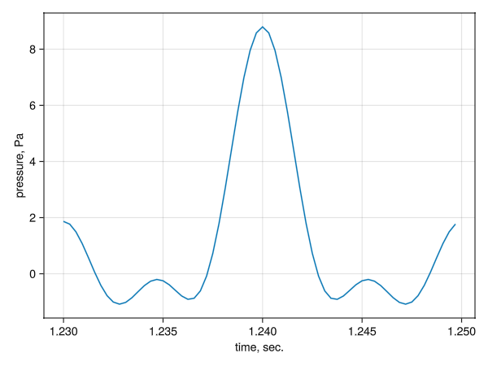
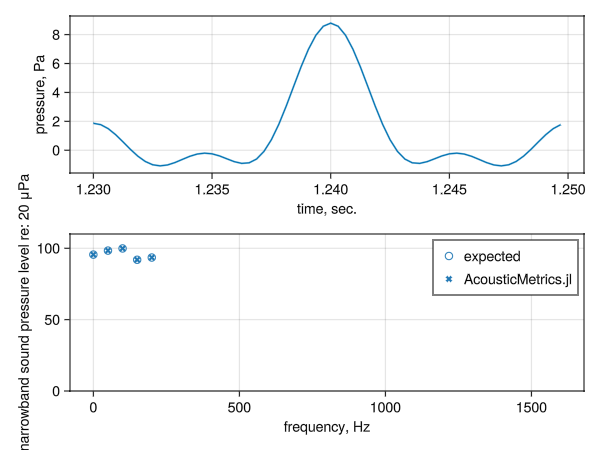
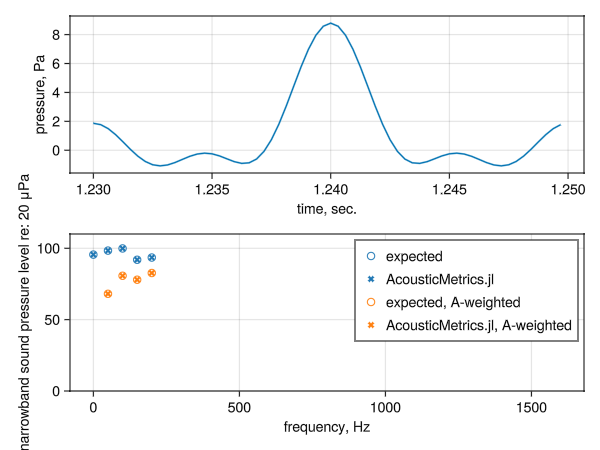

Software Quality Assurance
Tests
AcousticMetrics.jl uses the usual Julia testing framework to implement and run tests. The tests can be run locally after installing AcousticMetrics.jl, and are also run automatically on GitHub Actions.
To run the tests locally, from the Julia REPL, type ] to enter the Pkg prompt, then
(docs) pkg> test AcousticMetrics
Testing AcousticMetrics
Test Summary: | Pass Total Time
Fourier transforms | 16 16 9.0s
Test Summary: | Pass Total Time
Pressure Spectrum | 108 108 1.7s
Test Summary: | Pass Total Time
Mean-squared Pressure Spectrum | 88 88 8.0s
Test Summary: | Pass Total Time
Power Spectral Density | 88 88 0.9s
Test Summary: | Pass Total Time
Proportional Band Spectrum | 1066 1066 5.3s
Test Summary: | Pass Total Time
OASPL | 16 16 0.3s
Test Summary: | Pass Total Time
A-weighting | 8 8 0.5s
Testing AcousticMetrics tests passed
(docs) pkg> (The output associated with installing all the dependencies the tests need isn't shown above.)
Signed Commits
The AcousticMetrics.jl GitHub repository requires all commits to the main branch to be signed. See the GitHub docs on signing commits for more information.
Reporting Bugs
Users can use the GitHub Issues feature to report bugs and submit feature requests.
Some Simple Tests
Mean-Squared Pressure Spectrum and A-Weighting
Let's start off with a simple function that's a sum of four sinusoids.
using AcousticMetrics: PressureTimeHistory, frequency, MSPSpectrumAmplitude, OASPL, a_weight, a_weight!, W_A
omega1 = 2*pi*50.0 # 50 Hz in rad/s
omega2 = 2*pi*100.0 # 100 Hz in rad/s
omega3 = 2*pi*150.0 # 150 Hz in rad/s
omega4 = 2*pi*200.0 # 200 Hz in rad/sWe'll sample the simple function 16 times, and set the time period to be one cycle of the lowest non-zero frequency:
N = 64 # way more than necessary, but it makes the pressure time history look nice
period = 2*pi/min(omega1, omega2, omega3, omega4)The starting time shouldn't matter, so set it to some random value, then define the time levels.
t0 = 1.23
dt = period/N
t = t0 .+ (0:(N-1)).*dtWe need to set the pressure amplitudes, and the time offsets. The time offsets shouldn't affect the mean-squared pressure amplitude spectrum, of course.
A0 = 1.2
A1 = 2.345
A2 = 2.789
A3 = 1.12
A4 = 1.34
t1 = 5.1
t2 = 6.2
t3 = 7.1
t4 = 8.2Now we can create the pressure time history:
p1 = @. (A0 +
A1*cos(omega1*(t - t1)) +
A2*cos(omega2*(t - t2)) +
A3*cos(omega3*(t - t3)) +
A4*cos(omega4*(t - t4)) )Let's plot that.
using GLMakie
fig = Figure()
ax1 = fig[1, 1] = Axis(fig, xlabel="time, sec.", ylabel="pressure, Pa")
lines!(ax1, t, p1)
save("msp_a_weighting-pressure_time_history.png", fig)
Looks good. Now we can create a mean-squared pressure spectrum object:
apth = PressureTimeHistory(p1, dt, t[1])and then use that to find the mean-squared pressure amplitude:
msp = MSPSpectrumAmplitude(apth)We know what the mean-squared pressure amplitudes should be for each frequency. The frequencies are just these (we're converting from rad/sec to cycles/sec):
freqs_expected = [0.0, omega1, omega2, omega3, omega4] ./ (2*pi)And, since the root-mean square of a sinusoid with amplitude A is A/sqrt(2), the mean-square of each of our sinusoid components are just
msp_expected = [A0^2, A1^2/2, A2^2/2, A3^2/2, A4^2/2](The zero-frequency mean-squared pressure is different, since it isn't really a sinusoid.)
Now we can find the sound pressure level using the usual formula:
pref2 = (20e-6)^2 # usual squared reference pressure in Pa^2
spl_msp = 10 .* log10.(msp./pref2)
spl_msp_expected = 10 .* log10.(msp_expected./pref2)And also calculate the overall sound pressure level (OASPL):
oaspl_apth = OASPL(apth)
oaspl_msp = OASPL(msp)
oaspl_expected = 10.0 .* log10.(sum(msp_expected[2:end])./pref2) # skipping the zero-frequency component of `msp_expected`
(oaspl_apth, oaspl_msp, oaspl_expected)(103.0983092899119, 103.0983092899119, 103.09830928991181)The OASPL calculated from both the pressure time history and the mean-squared pressure spectrum are essentially identical to the expected value, so that's good.
We can plot the narrowband SPL now, too:
using ColorSchemes: colorschemes
colors = colorschemes[:tab10]
fig = Figure()
ax1 = fig[1, 1] = Axis(fig, xlabel="time, sec.", ylabel="pressure, Pa")
ax2 = fig[2, 1] = Axis(fig, xlabel="frequency, Hz", ylabel="narrowband sound pressure level re: 20 μPa")
lines!(ax1, t, p1)
scatter!(ax2, freqs_expected, spl_msp_expected; label="expected", marker=:circle, strokewidth=1, color=(colors[1], 0), strokecolor=(colors[1], 1.0))
scatter!(ax2, frequency(msp), spl_msp; label="AcousticMetrics.jl", marker=:x, color=colors[1])
axislegend(ax2; merge=true, unique=true, position=:rt)
ylims!(ax2, 0.0, 110.0)
save("msp_a_weighting-spl.png", fig)
Looks good.
Now, let's A-weight the spectrum. There are two routines we can use to do that: a_weight!, which applies the A-weighting in-place, and a_weight, which returns a new spectrum object.
# Create new MSP spectrum object and A-weight it in-place:
msp_Aweight1 = MSPSpectrumAmplitude(apth)
a_weight!(msp_Aweight1)
# A-weight and return a new MSP spectrum object:
msp_Aweight2 = a_weight(msp)
# Find the sound pressure level for each approach:
spl_Aweight1 = 10 .* log10.(msp_Aweight1 ./ pref2)
spl_Aweight2 = 10 .* log10.(msp_Aweight2 ./ pref2)We'll check that the MSP for each approach is the same:
println(msp_Aweight1 .- msp_Aweight2)[0.0, 0.0, 0.0, 0.0, 0.0, 0.0, 0.0, 0.0, 0.0, 0.0, 0.0, 0.0, 0.0, 0.0, 0.0, 0.0, 0.0, 0.0, 0.0, 0.0, 0.0, 0.0, 0.0, 0.0, 0.0, 0.0, 0.0, 0.0, 0.0, 0.0, 0.0, 0.0, 0.0]No difference, so that's great.
We can also manually calculate what the A-weighted mean-squared pressure spectrum should be, for comparison purposes. First, we need to find the weightings for each frequency, which we do with the W_A routine.
weights = W_A.(freqs_expected)And then we weight the MSP with weights, and calculate the SPL:
msp_Aweight_expected = weights.*msp_expected
spl_Aweight_expected = 10 .* log10.(msp_Aweight_expected ./ pref2)And finally make another plot:
fig = Figure()
ax1 = fig[1, 1] = Axis(fig, xlabel="time, sec.", ylabel="pressure, Pa")
ax2 = fig[2, 1] = Axis(fig, xlabel="frequency, Hz", ylabel="narrowband sound pressure level re: 20 μPa")
lines!(ax1, t, p1)
scatter!(ax2, freqs_expected, spl_msp_expected; label="expected", marker=:circle, strokewidth=1, color=(colors[1], 0), strokecolor=(colors[1], 1.0))
scatter!(ax2, frequency(msp), spl_msp; label="AcousticMetrics.jl", marker=:x, color=colors[1])
scatter!(ax2, freqs_expected, spl_Aweight_expected; label="expected, A-weighted", marker=:circle, strokewidth=1, color=(colors[2], 0), strokecolor=(colors[2], 1.0))
scatter!(ax2, frequency(msp), spl_Aweight1; label="AcousticMetrics.jl, A-weighted", marker=:x, color=colors[2])
axislegend(ax2; merge=true, unique=true, position=:rt)
ylims!(ax2, 0.0, 110.0)
save("msp_a_weighting-spl-a.png", fig)
The A-weighted narrowband SPL matches the expected values quite closely, so everything seems to be good!
These checks are part of the AcousticMetrics.jl tests, FYI—look for the "simple functions with known MSP" test set within "A-weighting" in tests/runtests.jl.